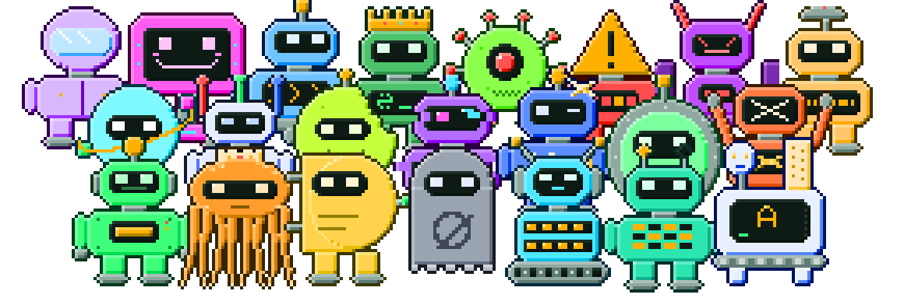
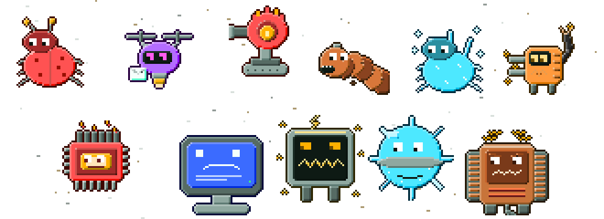

B.A.B.E.L.
Fünf Spiele · ein alter PC
Die Welt // ein alter Tower-PC
BABEL ist ein alter Tower-PC. Jahrelang stand er ausgeschaltet in einer Ecke, jetzt läuft er wieder. Mit dem Strom sind die Roboter aufgewacht, BYTE als Erster.
Für die Roboter ist der PC eine ganze Welt. Hinten ragt die Platine auf: unten die Steckkarten, darüber Knopfzelle, Chipsatz und Arbeitsspeicher, ganz oben der Hauptrechner. Er ist das Gedächtnis des PCs, und jeder Roboter hat dort eine Spur hinterlassen. Vorne stecken die Laufwerke, in einem leeren Schacht dazwischen liegt die Werkstatt. Ein Aufzug führt hinunter in den Schrottschacht, wo sich alles sammelt, was in all den Jahren heruntergefallen ist: Staub, Schrauben, abgebrochene Teile.
Und die Roboter selbst. Beim langen Stillstand sind sie alle hinuntergefallen. Unten in Bots & Buddies holt man sie zurück, oben in Bits & Bolts ihre Erinnerungen. In den Laufwerken bauen sie mit Lines & Loads eine Fabrik, an den Anschlüssen halten sie in Amps & Arcs das Rauschen fern, und in Echoes & Encores bringen sie den stummen Lautsprecher wieder zum Klingen.
- Keine Menschen. Wer den PC eingeschaltet hat, spielt keine Rolle.
- Keine Bedrohung. Kein Feind, kein Zeitdruck. Es geht um Neugier, Freunde finden und den PC Stück für Stück herrichten.
- Störungen gehören dazu wie Wetter: Oben auf der Platine flackern Wackelkontakte, Störsignale, Stromausfälle und Überspannung. Unten im Schacht wuchern sie zu Getier.
- 22 Roboter leben hier, jeder mit einer Heimat im PC und einer Eigenart, die er in jedes Spiel mitbringt.
Der Name. Wie der Turm von Babel ist BABEL ein Turm, in dem jeder anders spricht: in Bits, in Strömen, in Tönen. Und die Anfangsbuchstaben der fünf Spiele ergeben genau dieses Wort.
Die Bewohner // 22 Roboter
Sie sind mit dem Strom aufgewacht, jeder mit einer Heimat irgendwo im PC und einer Eigenart, die er in jedes Spiel mitbringt. In Bots & Buddies holt man sie aus dem Schacht, in Bits & Bolts ihre Erinnerungen zurück.

Die Störungen // Getier im Schacht
Keine Feinde mit Absicht. Wo im PC kein Roboter wohnt, wuchern Störungen: oben auf der Platine wie Wetter, unten im Schacht wie Getier. Bugs, Spam-Drohnen und Rostwürmer, und in jeder Schicht ein Wächter, bis hinunter zum Brummtrafo im Netzteil.
